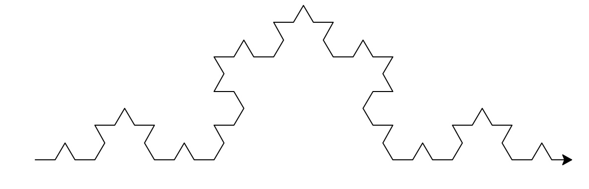
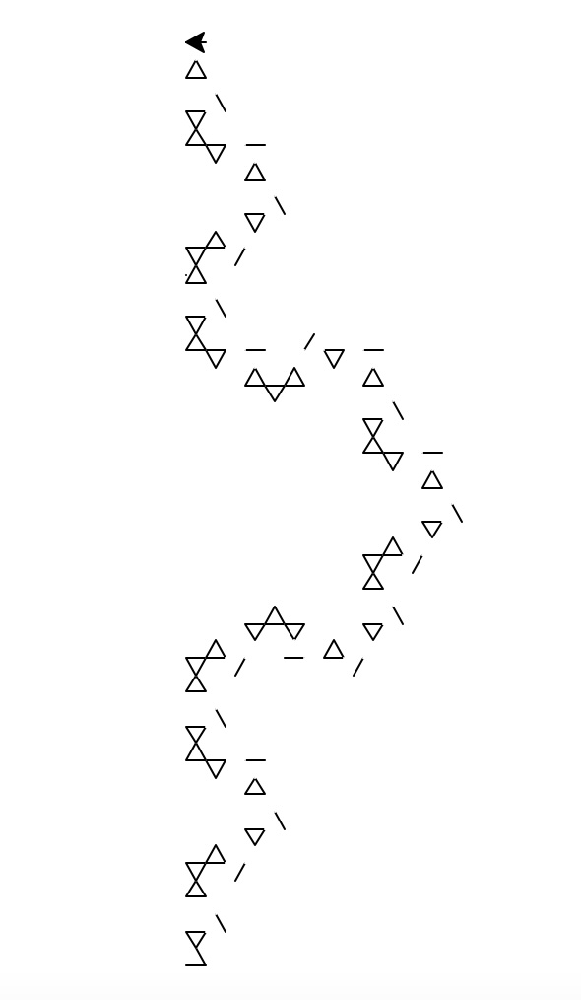
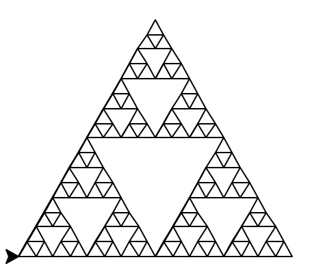
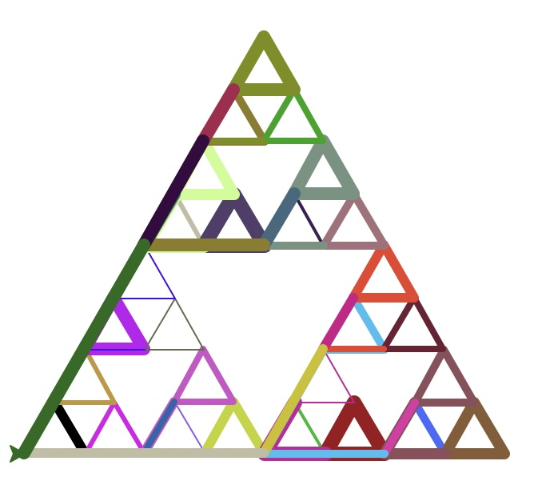
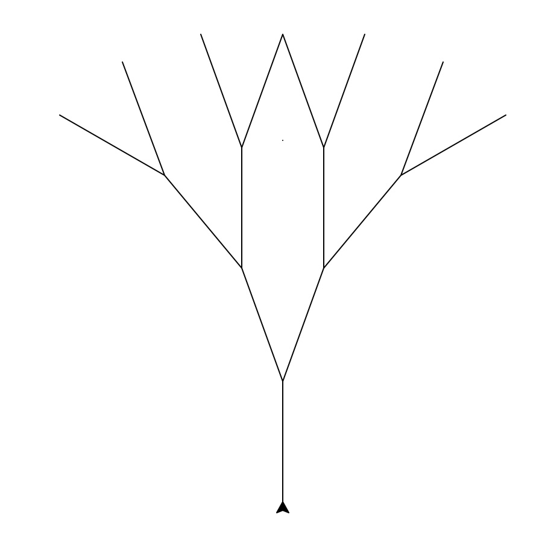
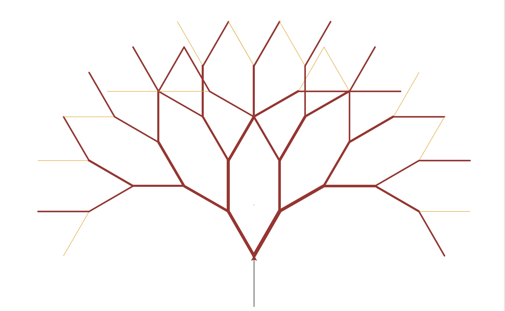

The image below shows the normal Koch curve with draw_Koch(turtle,4,20)
My new take on the Koch curve was to reverse the angles, instead of making left turns of 60°, the turtle would make left turns of 120° while changing from 120° to 60° while turning right. This seems to have shifted the rough outline of the fractal by 90°. However, it has also given rise to some more cool/intricate triangle patterns per each level of depth. In addition, I decided to switch between black and white "ink" for the turtle, which led to triangle designs being accompanied by the rough outline of the fractal, making for a cool looking Koch Curve.
The Code for this Modified Koch Curve:
def modify_koch(t, depth, length):
t.pd()
if depth == 1:
t.fd(length)
if depth > 1:
modify_koch(t, depth- 1, length)
t.lt(120)
modify_koch(t,depth - 1, length)
t.color("white")
t.rt(60)
modify_koch(t,depth-1, length)
t.color("black")
t.lt(120)
modify_koch(t,depth -1, length)
The image below shows the normal sierpinski triangle with draw_sierpinski(Turtle, 5, 200)
This take on the Sierpinski Triangle randomizes the color and width of the lines of the triangle. This results in many unique colors and widths due to the RGB system allowing for various colors and a possible width of 10 pixels. This is just one example of what the code might produce, while, if you run it yourself, it could result in various different Sierpinski triangles. The depth is 4 and the length is 300 pixels for this example.
The Code for this Modified Sierpinski Triangle:
def modify_sierpinski(t,depth,length):
t.pd()
t.pensize(random.randrange(0, 10))
if depth == 1:
t.lt(60)
t.fd(length)
t.rt(120)
t.fd(length)
t.rt(120)
t.fd(length)
t.rt(180)
else:
modify_sierpinski(t, depth - 1, length/2)
t.fd(length/2)
t.color(random.randrange(0,256), random.randrange(0,256), random.randrange(0,256))
modify_sierpinski(t, depth - 1, length / 2)
t.color(random.randrange(0,256), random.randrange(0,256), random.randrange(0,256))
t.bk(length / 2)
t.lt(60)
t.fd(length / 2)
t.rt(60)
modify_sierpinski(t, depth - 1, length / 2)
t.color(random.randrange(0,256), random.randrange(0,256), random.randrange(0,256))
t.rt(120)
t.fd(length / 2)
t.lt(120)
The image below shows the normal tree with tree(Animri, 4, 50, 20)
This modified version of a fractal tree aims to take autumn themes in the coloring of the tree. It has a brown and orange color scheme, which is common among many trees in the autumn months. I also tried to imitate the fact that trees start out very thick at the bottom but slowly, as it grows taller and branches out develops thinner and thinner branches before moving to leaves. This example uses a depth of 6, length of 100, and angle of 30°(the angle with which this modification works best).
Here is the code for the modified tree:
def modify_tree(t, depth, length, angle):
t.pd()
t.pensize(depth)
if depth == 1:
t.fd(length)
else:
t.pensize(depth)
modify_tree(t, depth - 1, length, angle)
t.lt(angle)
t.pensize(depth + 1)
t.color("orange")
modify_tree(t, depth - 1, length, angle)
t.bk(length)
t.rt(90 - angle)
t.pensize(depth + 1)
t.color("brown")
modify_tree(t, depth - 1, length, angle)
t.pensize(depth + 1)
t.bk(length)
t.lt(angle)